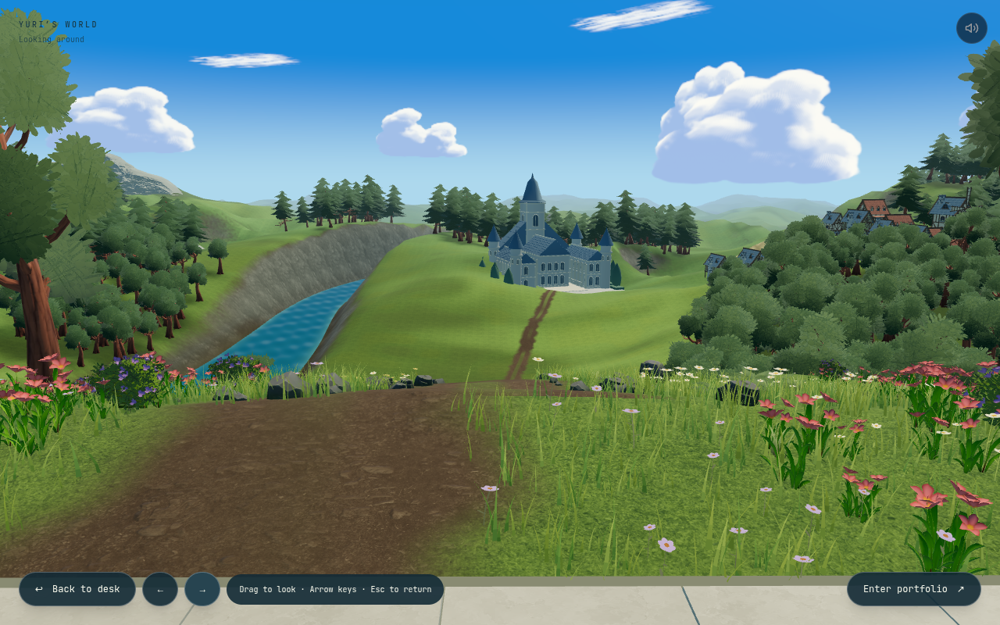
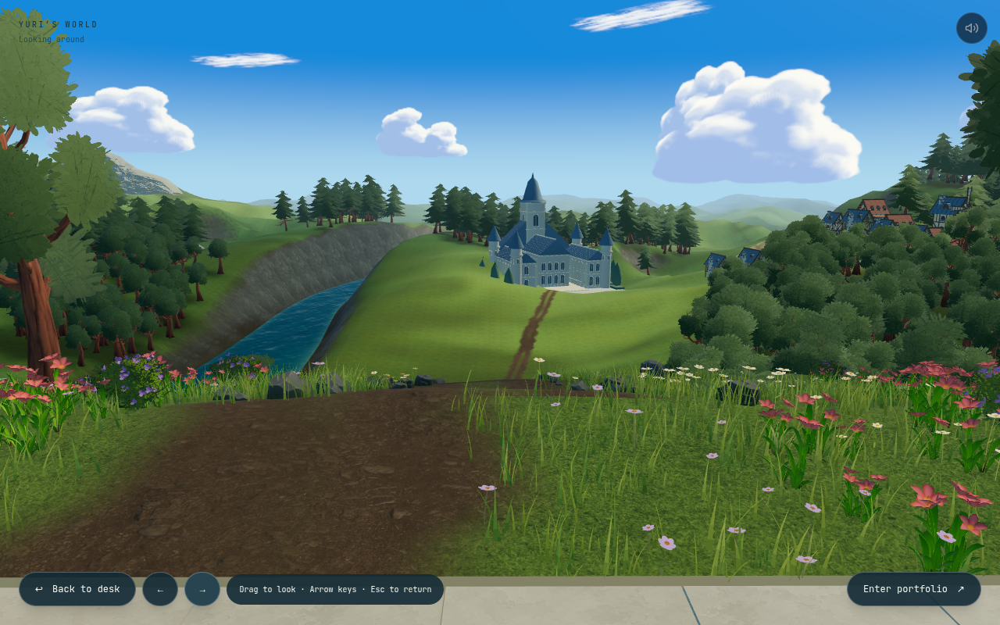

Sol, sombra e movimento
A luz agora varia ao longo do vale. As áreas sob nuvens mantêm a iluminação do céu, as folhas deixam passar parte da luz do sol e o rio tem ondulações irregulares.


AtualAnteriorMesmo enquadramento e resolução por vista. Nuvens e vegetação estão em movimento; as capturas não representam o mesmo instante da animação.
Veja em movimento
Gravação do navegador com a versão de produção local. O vídeo não inicia automaticamente.
O que mudou
- Sol mais lateral e quente, com preenchimento frio nas sombras.
- Sombras próximas cobrindo árvores, ruínas e os arredores da mesa.
- Cobertura de nuvens animada e compartilhada entre os materiais do ambiente.
- Transmissão de luz nas folhas e pétalas, dependente da posição do sol e da câmera.
- Ondulações do rio sem a grade repetida de reflexos; variação por profundidade e espuma nas margens rasas.
As sombras de nuvens e a transmissão nas folhas são aproximações leves. O relevo e as margens do rio ainda precisam de trabalho de forma; iluminação não resolve essa parte.
Notas técnicas e validação